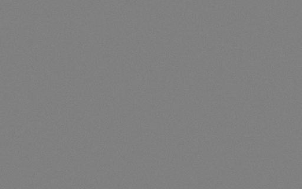
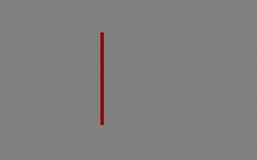
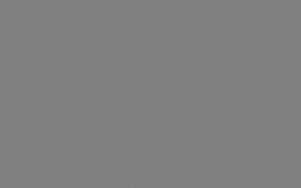
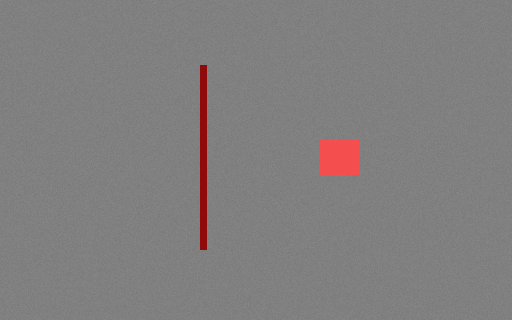

均匀表面 · 六件演示批次
批次 5a968d052f7b493b88998c2cd5154e23 · Completed · Hip
配方：均匀表面 · 灰度与局部对比 / 9520bdb60e2f95a5；创建时间 2026-11-20T15:25:58.6778996+00:00；应用 0.12.0
后端初始化（含模型编译，如适用）：302.882 ms；每项检测链另计。
后端资源：新建实例；本次构建 291.214 ms，等待 0.037 ms，原始编译 249.687 ms。资源标识 4e57ede9f084d1f72319b3328dbcd57975bacdd86b4a3f9c883cc1a73c41f619。最多保留 1 个实例；未承诺显存字节配额或跨进程编译缓存。
输入：确定性合成演示，不代表真实工业精度。检测单位为像素；未进行物理尺寸标定。
最终结果：合格 3 / 缺陷 3 / 待复核 0。失败/取消项保留待复核。
人工复核：已确认 0 / 可复核 6；无记录 6，人工暂缓 0，未完成/失败 0，与机器结论不同 0。检测完成和机器预测不代表人工确认；暂缓项仍待处理。
surface-01.png
执行 Completed / 自动 Pass / 最终 Pass
512×320 px，缺陷 0 px，0 个区域
输入 SHA-256：cff00d4e8a163d9dbb0a246037e41a42e5eb856d4709216301f836490aaa7719
人工复核状态 Unreviewed / 版本 0

检测链 114.430 ms（校验输入、解码至证据写入；不含队列/初始化/数据库提交），AMD Radeon PRO W7900
surface-02.png
执行 Completed / 自动 Defect / 最终 Defect
512×320 px，缺陷 1295 px，1 个区域
输入 SHA-256：00da24fbc80e79b1a8d02f35df348074eb8ea853dc24ed39f08b23ea36522ae7
人工复核状态 Unreviewed / 版本 0

检测链 92.697 ms（校验输入、解码至证据写入；不含队列/初始化/数据库提交），AMD Radeon PRO W7900
surface-03.png
执行 Completed / 自动 Defect / 最终 Defect
512×320 px，缺陷 1400 px，1 个区域
输入 SHA-256：e9dc746cc2e6918c6a44eb7fc809cf3e0118b617980e376e871ca60a47b77a6b
人工复核状态 Unreviewed / 版本 0

检测链 86.871 ms（校验输入、解码至证据写入；不含队列/初始化/数据库提交），AMD Radeon PRO W7900
计算耗时不可用；检测结果和检测链墙钟耗时保留。
surface-04.png
执行 Completed / 自动 Pass / 最终 Pass
512×320 px，缺陷 0 px，0 个区域
输入 SHA-256：6c21d3b4afefe503b81aa7ce360b0c63e779913f1308bb0c4c236df4f9d4c536
人工复核状态 Unreviewed / 版本 0

检测链 85.483 ms（校验输入、解码至证据写入；不含队列/初始化/数据库提交），AMD Radeon PRO W7900
计算耗时不可用；检测结果和检测链墙钟耗时保留。
surface-05.png
执行 Completed / 自动 Defect / 最终 Defect
512×320 px，缺陷 2695 px，2 个区域
输入 SHA-256：7baaa6eafc72c3890691522a4d040d5fa95f0c786b334b499d61140b9485a772
人工复核状态 Unreviewed / 版本 0

检测链 86.520 ms（校验输入、解码至证据写入；不含队列/初始化/数据库提交），AMD Radeon PRO W7900
surface-06.png
执行 Completed / 自动 Pass / 最终 Pass
512×320 px，缺陷 0 px，0 个区域
输入 SHA-256：8959ba61113c5f5342b084db4e0f3e2e01848ee75ac48616c3a81330e786d2ed
人工复核状态 Unreviewed / 版本 0

检测链 89.885 ms（校验输入、解码至证据写入；不含队列/初始化/数据库提交），AMD Radeon PRO W7900
计算耗时不可用；检测结果和检测链墙钟耗时保留。